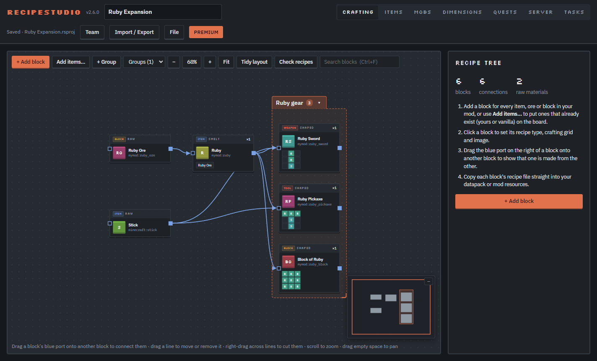
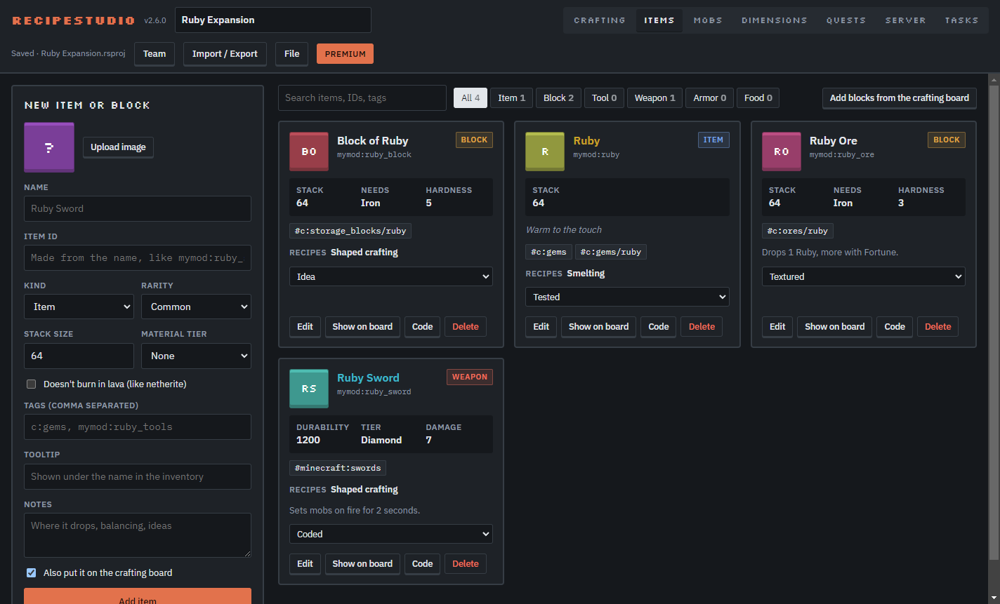
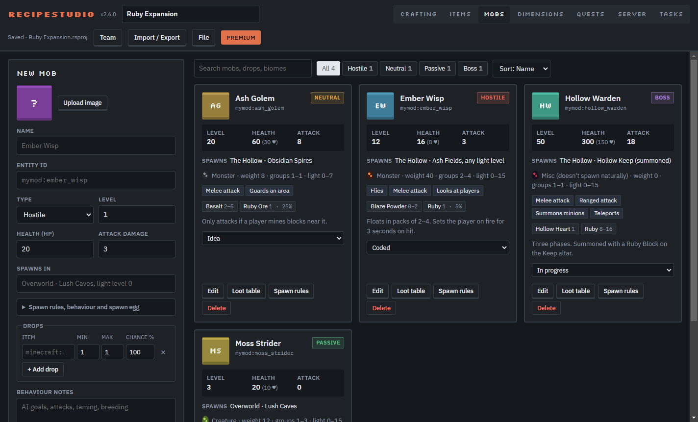
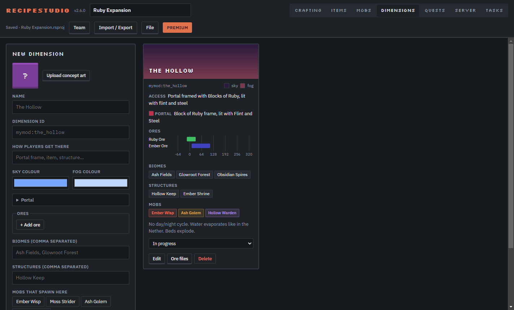
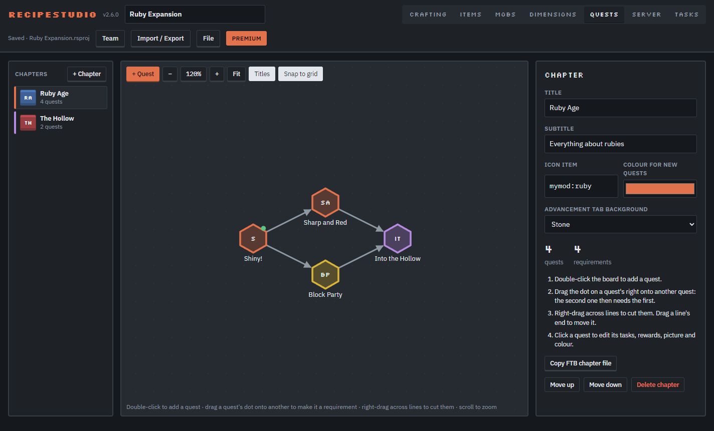
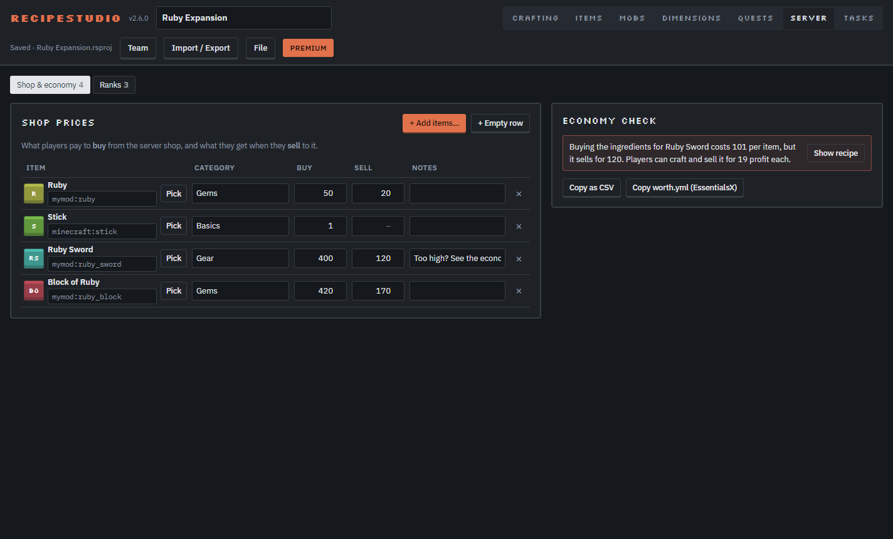
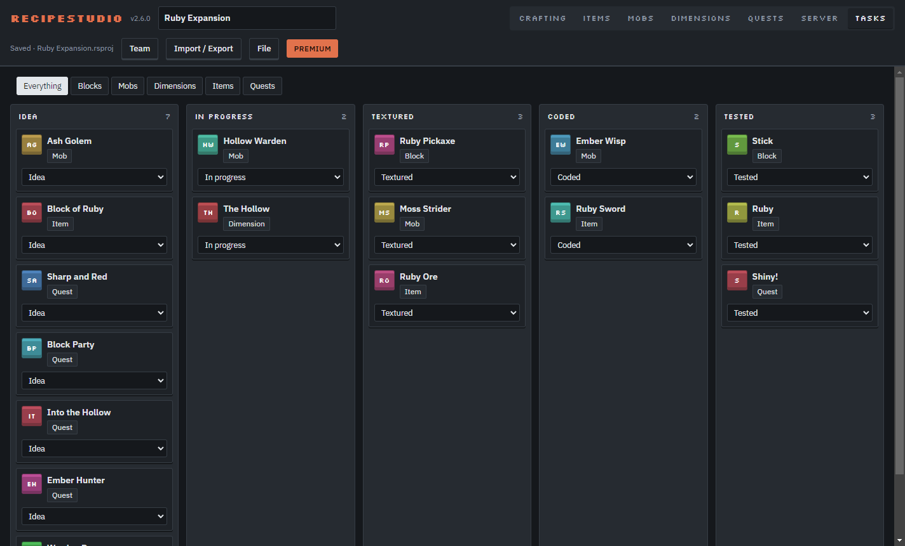

Plan your Minecraft mod before you code it
Map every crafting recipe on one diagram. Plan items, mobs, dimensions, quests and the server shop. Then export it straight into the game.
Free to use · Windows 10 and 11 ·
BetaHelping us test? Get the beta version, with Premium and Teams free during the test.

How it works
From idea to datapack in three steps
No code needed to plan. When you're ready, RecipeStudio writes the files for you.
Lay it out
Add a block for every item and connect it to what it's made from. Or import a mod .jar or datapack and start from that.
Fill in the details
Recipe types, item stats, mob drops, ore heights, quest rewards and shop prices, all in one project file.
Export
Get a ready datapack, mod resources, FTB Quests chapters, KubeJS or CraftTweaker scripts, or a web page to share.
Features
Everything your mod needs, in one place
Seven planning tabs that know about each other. Rename an item once and every recipe, drop, quest and shop row follows.
These pictures are temporary. They show a small example project for now. We'd love to show real ones instead.
Made something in RecipeStudio? Send us screenshots of your project at forgetfulstudios@gmail.com, and it could be featured right here on the main page.
Crafting diagram Free
Every recipe is a block, wired to the items it's made from. The board has no edges, so a 500-recipe modpack fits.
- Shaped, shapeless, smelting, blasting, smoking, campfire, stonecutting, smithing, brewing and your own machines
- Groups that fold into one tile, a minimap and search (Ctrl+F)
- Item picker with every vanilla item and everything in your project
- Check recipes finds missing ingredients, loops and unused materials
Items & Blocks Premium
Stack size, durability, tool tier, rarity, food and hardness, with tags and a tooltip. A block on the board and an item with the same ID are the same thing.
- Java property code to paste into your mod
- Language file and tags, ready to export
- Add every block from the crafting board in one click

Mobs Premium
A roster of every creature: health, attack, level, behaviours and spawn egg colours.
- Drops become a loot table file
- Spawn rules as a NeoForge biome modifier, plus a Fabric line
- Filter by hostile, neutral, passive and boss

Dimensions Premium
Plan the portal, sky and fog, biomes, structures and which mobs live there.
- Ore height chart, so you can see where every ore spawns
- Worldgen files for each ore

Quests Premium
Draw the progression as a map of hexagons, chapter by chapter, with tasks and rewards on each quest.
- Exports FTB Quests chapters for 1.21 and 1.20.1
- Also exports vanilla advancements, one tab per chapter
- Requirements can't loop. The board won't let them

Server shop & ranks Premium
Set buy and sell prices for your server shop. The economy check warns you when players could make money from nothing.
- Catches sell prices above buy prices, and recipes that are cheaper to craft than to sell
- Ranks with LuckPerms commands
- Exports EssentialsX
worth.ymland a CSV

Tasks Premium
A board of everything in the project, from idea to tested. Move a card and the item, mob or quest updates too.
- Filter by blocks, mobs, dimensions, items or quests
- In a team, each card can have an assignee

And also
Gets your work in and out
Import
Open a mod .jar, a datapack .zip or a folder, or drop it on the window. Its recipes appear on the board, named and pictured.
Export
A datapack zip, mod resources, KubeJS, CraftTweaker, a language file, server files, or a read-only web page.
Project files
Each project is one .rsproj file, pictures inside. Saved automatically, as many as you like, on every plan.
Teams
Edit together live, with comments, @mentions, assignees, roles, history and share links. Works offline and syncs when you're back.
Pricing
Free to start. Pay once for the rest.
The crafting diagram is free for good. Premium is a one-time purchase. Teams pay monthly.
Prices in US dollars. Payments are handled by Polar, which adds tax where it applies. See the refund policy.
Download
Get RecipeStudio for Windows
Windows 10 and 11. Free, with no account needed.
Version · Updates itself
Run the installer
Open RecipeStudio-Setup.exe. If Windows says it "protected your PC", click More info, then Run anyway.
Choose a folder
The setup wizard suggests a folder. Keep it or pick your own.
Start planning
Tick Run RecipeStudio at the end. An example mod opens so you can see how everything fits.
About the "Windows protected your PC" message
Windows shows this blue window for new apps from small developers that don't have a paid code-signing certificate yet. It doesn't mean something is wrong with RecipeStudio. To install, click More info, then Run anyway.
To stay safe, only download RecipeStudio from this website. The download comes straight from our official GitHub page.
Helping us test? Get the beta version, with Premium and Teams free during the test.
FAQ
Questions
Do I need to know how to code?
No. You can plan everything without code, and export datapacks that work in any world. Mod developers also get recipe files, language files, tags and Java snippets.
Which Minecraft versions does it export for?
Java Edition 1.21 and newer. FTB Quests chapters can also be made for 1.20.1. Scripts work with KubeJS 6 and 7, and CraftTweaker for 1.20 and newer.
Does it work with NeoForge, Forge and Fabric?
Datapacks work on all of them. Mob spawn rules come as a NeoForge biome modifier plus a line for Fabric.
Where are my projects saved?
On your computer, as .rsproj files in Documents\RecipeStudio. Team projects are also saved online so your team can work on them together, and you can keep working offline.
Is Premium a subscription?
No. Premium is a one-time purchase with a license key. Only the Team plan is monthly, and you can cancel it whenever you like.
How do teams work?
The team owner pays for the team in the app, then invites people by email or with an invite code. Everyone in the team gets every feature inside the team's projects.
Windows says it "protected your PC". Is RecipeStudio safe?
Yes. Windows shows that message for new apps from small developers that don't have a paid code-signing certificate yet. Click More info, then Run anyway. Only download RecipeStudio from this website, so you know you have the real one.
Does it update itself?
Yes. New versions download in the background and install when you close the app.
Does the app collect data?
It sends anonymous counts of which features are used, which you can switch off in the File menu. Your projects stay private. See the privacy policy.
Can my project be featured on this site?
Yes, please! The screenshots on this page are temporary. Send screenshots of your project to forgetfulstudios@gmail.com, with the name you'd like shown, and we may feature it on the main page.
Is there a Mac version?
Not yet. RecipeStudio is Windows only for now.